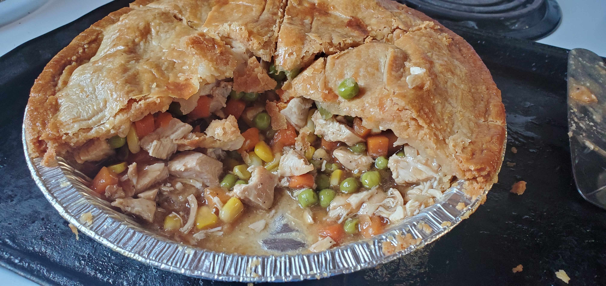

Chicken Pot Pie

Description
One of the Classics!!! Whether you serve this to your family at dinner, or save it for leftovers
throughout the week, I would consider this a staple dinner to put on the table. Warm and filling.
It is also highly customizable. Want to add peppers? Throw it in!! Want to substitute
chicken with beef or pork? DO IT!! Just make sure to cook the meat properly.
Inspired by AllRecipes
Ingredients
- 1 pound skinless, boneless chicken breast halves - cubed
- 1 cup sliced carrots
- 1 cup frozen peas
- 1/2 cup sliced celery
- 1/3 cup butter
- 1/3 cup chopped onion
- 1/3 cup all-purpose flour
- 1/2 tsp salt
- 1/4 tsp black pepper
- 1/4 tsp celery seed
- 1 3/4 cups chicken broth
- 2/3 cup milk
- 2 (9-inch) unbaked pie crust
Steps
- Do all prep work, like cubing the chicken, cutting the carrot, onion and celery.
Gather all the rest of your ingredients. Preheat oven to 425 degrees F(220 degrees C).
- Combine the chicken, carrots, peas, and celery into a saucepan. Add water until
it covers ingredients. Bring it to a boil, and boil for 15 minutes, Remove
from heat, then drain water.
- While chicken is cooking, melt butter in another saucepan at medium heat. Add
onion and cook until soft and translucent, which takes 5 to 7 minutes. Stir in
your flour, salt, pepper, and celery seed.
- Slowly stir in your chicken broth and milk to the onion mix. Reduce heat to
medium low and simmmer until thick, which is 5 to 10 minutes. Remove from heat
and set broth aside.
- Take your pie crust and place chicken and vegetable mix into the bottom pie crust.
Pour hot broth over top of mixture.
- Cover with the cop crust, sealing the edges, and cutting away any excess dough.
Cut small slits in the top crust so steam can escape.
- Place in preheated oven, cook for 30 to 35 minutes, or until pastry is golden
brown and filling is bubbly. Let it cool for 10 minutes before serving.
- ENJOY!!!
Return to Recipes Index